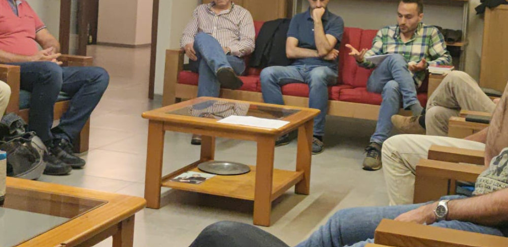
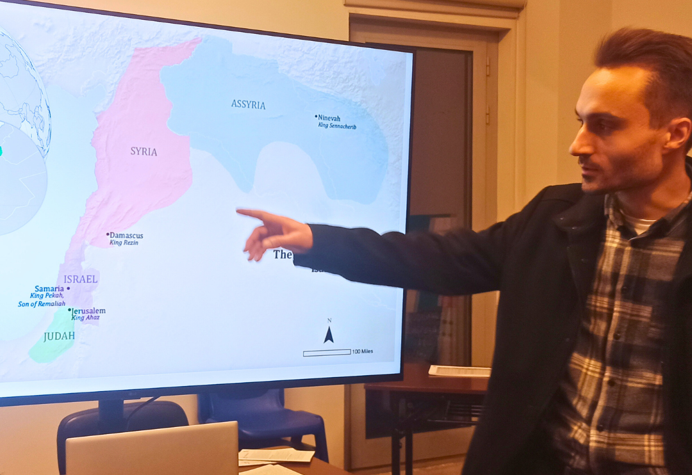
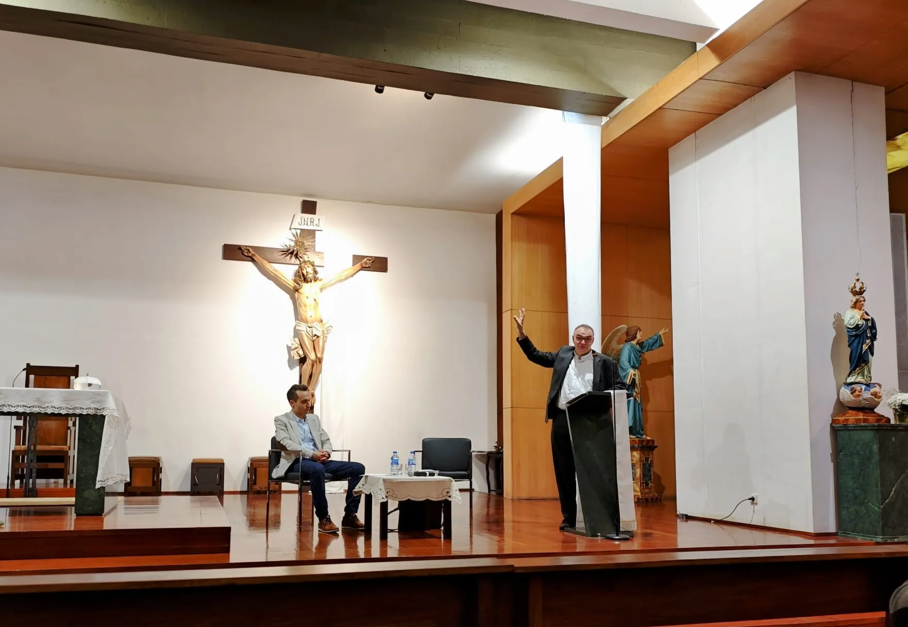

O Meu Percurso
A minha missão através do ensino e das palestras assenta no compromisso inequívoco com a Verdade revelada. Sendo teologicamente ancorado na verdade de Cristo e no Magistério da Igreja, considero-me politicamente sem-abrigo. Sou crítico de muitas coisas e, por fidelidade à exigência do Evangelho, admirador de poucas.
Como Fundador da Jerónimo Editora e responsável pelo movimento paroquial Aprendizes do Verbo, dedico o meu percurso a formar comunidades paroquiais activas, munindo-as com boas fontes e literatura sólida para fazer face aos desafios intelectuais da contemporaneidade.
«Sem a loucura que é o homem
Mais que a besta sadia,
Cadáver adiado que procria?»Galeria de fotos EstudoArcebispo Primaz de Braga D. José CordeiroRenovar
EstudoArcebispo Primaz de Braga D. José CordeiroRenovar
Formação Grupos
Aprendizes do Verbo
Palestra Padre Domingos Areais